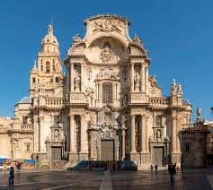
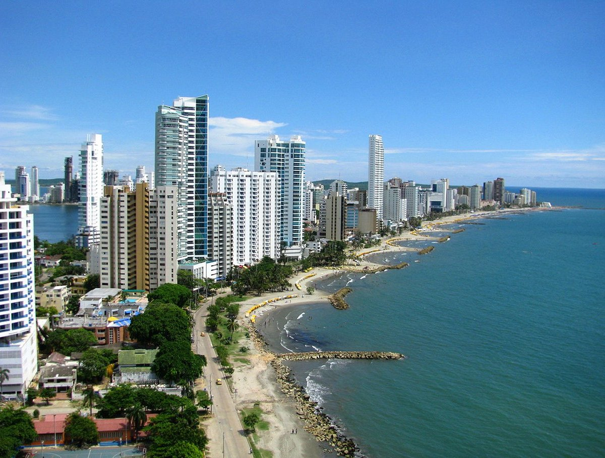
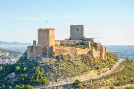

Murcia Capital
La cuna del barroco murciano y la huerta.

Cartagena
Puerta de España, con un legado romano único.

Lorca
Conocida por su impresionante Semana Santa.
Descubre los rincones más bellos de la Región de Murcia.

La cuna del barroco murciano y la huerta.

Puerta de España, con un legado romano único.

Conocida por su impresionante Semana Santa.